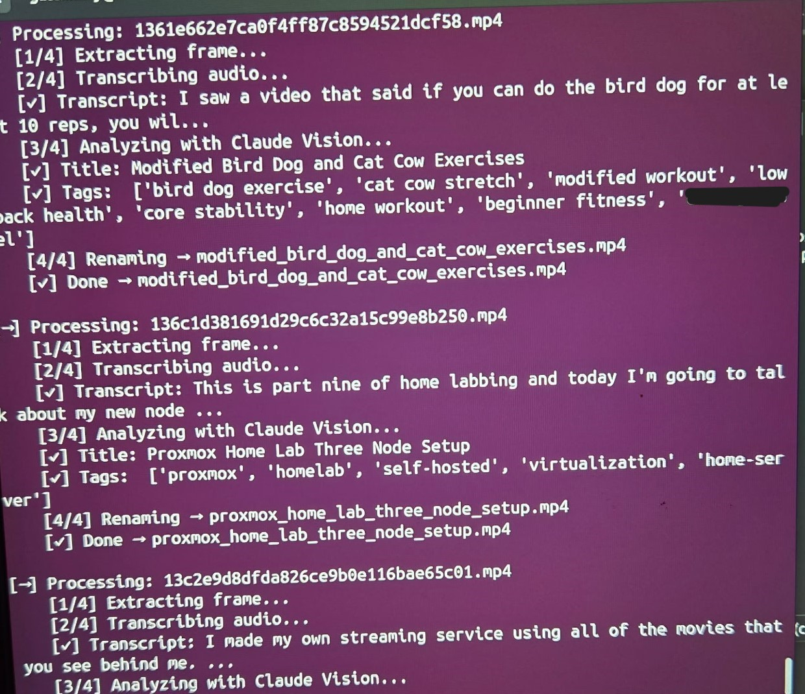
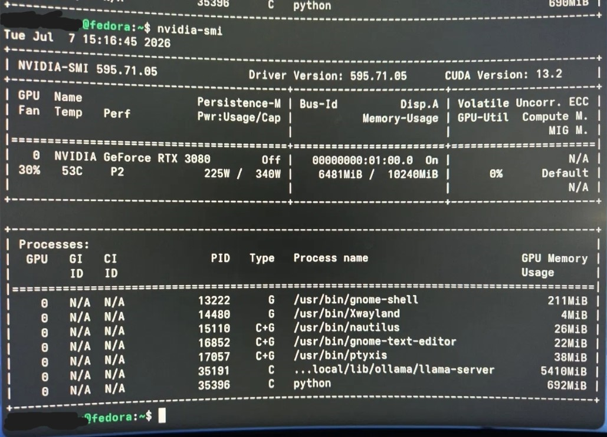
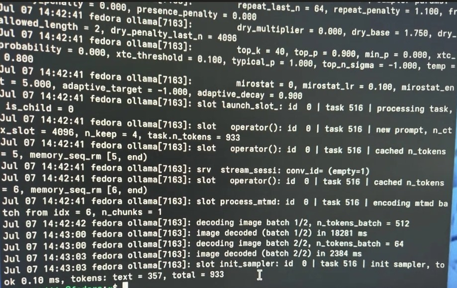
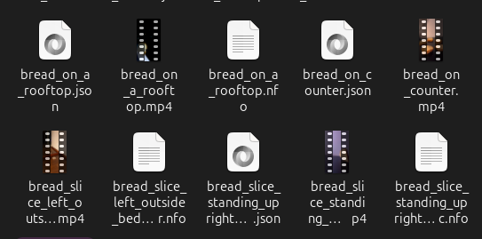
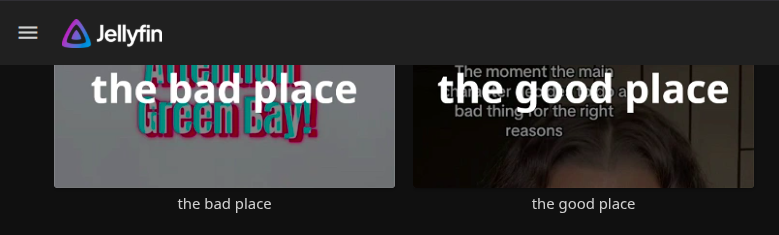
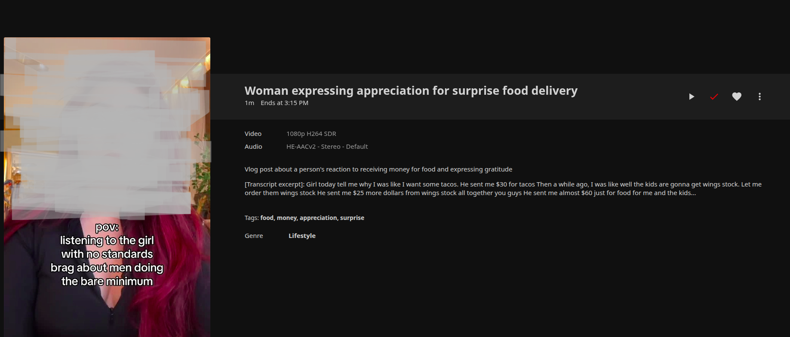

I built a local + cloud AI pipeline to rescue 7,555 hash-named TikToks from digital limbo. It organized the mess—and accidentally became an experiment in how confidently machines misunderstand the internet.
It started as an archival placeholder.
I use TikTok, but on my own terms — a dedicated secure phone, a separate secured WiFi network, Pi-hole running underneath it all. My family doesn't use the platform at all; I'm the one who walked them through the data privacy concerns in the first place. So when something on my feed was worth sharing with them, the only way to do it was to download the clip and send it off-platform.
That habit built up a growing folder of downloaded videos — the kind of thing that accumulates for months without anyone noticing. But TikTok's downloaded filenames are just hashes: 1361e662e7ca0f4ff87c8594521dcf58.mp4 tells you nothing. No title, no context, no way to find anything without opening every single file.
Deleting them felt like erasing an inside joke I'd already told once. So instead of cleaning house, I built a pipeline: extract a frame, transcribe the audio, hand both to a vision model, and let it figure out what the video actually was — then rename and tag it automatically.
It worked. Really well. Well enough that I got curious about what would happen if I didn't stop at 555.
In January 2025 I'd requested my full data export from TikTok — the kind of archive most people request once, glance at, and forget. Sitting inside it: roughly 7,000 more unlabeled videos, most with just as little usable metadata as the 555 I'd started with.
What began as "let me fix this folder" became a real stress test for the pipeline: could it hold up at 10x+ the scale, across wildly inconsistent content — fitness clips, home renovation, recipe videos, news commentary, and no shortage of unfiltered internet chaos?
One detail I didn't chase down, but noticed along the way: buried inside TikTok's own export structure, those 7,000 files actually have their original metadata sitting somewhere else in the archive — just not attached to the video files themselves. Extracting it and correctly matching each record back to its corresponding hash-named .mp4 is a real problem on its own, and a good candidate for a future pass at this project rather than something I solved here.

Every video goes through the same four-step pass: extract a representative frame, transcribe the audio with Whisper, hand the frame + transcript to a vision model for title/tag/description generation, then rename the file and write a Jellyfin-compatible .nfo / .json sidecar next to it.
The cloud/local split wasn't just a fallback — I deliberately ran both paths side by side to see how they'd actually compare on real footage, and ended up preferring the local path. Keeping inference on my own hardware meant no per-video API cost, no data leaving my network, and full control over which model was doing the work.
On the local side, model choice took some real trial and error. I tested llava:13b, llava:7b, and moondream against each other to compare output quality and resource cost. Running llava:13b against a 10GB RTX 3080 blew past comfortable VRAM headroom; dropping to llava:7b brought usage down to ~5.4GB while still producing solid titles and tags, so that's what the production run used. Small model-selection decisions like this are where "it runs on my machine" turns into "it runs reliably, unattended, for 7,000 videos."



I want to be upfront about something most portfolio write-ups skip: this was never built to be a permanent archival system. It was a placeholder solution for files that otherwise had no metadata at all — and judged against that bar, it delivered. Judged against a higher bar, it revealed exactly where automated content understanding breaks down.
Straightforward content — tutorials, recipes, home projects, fitness demos — got accurate, specific, searchable titles and tags almost every time. Exactly the win I needed for orphaned files with zero context.
Social commentary, sarcasm, and "brainrot"-tier internet content. The model could transcribe the words but consistently missed tone, irony, and cultural subtext — flattening pointed commentary into generic, sometimes inaccurate summaries.
That gap is the most interesting output of this whole project. It's a small, self-contained demonstration of a much bigger open question: current AI models are strong at literal content description and weak at cultural fluency — the layer where a lot of internet-native meaning actually lives.


This started as a way to avoid deleting 555 TikToks. It ended up being a hands-on look at where AI-assisted classification is genuinely useful — bulk labeling, transcription, first-pass organization — and where it still needs a human in the loop: nuance, tone, and the difference between describing a video and understanding it.
It also gave me real, load-bearing experience with the unglamorous parts of a data pipeline: resource-constrained model selection, dual cloud/local inference paths, structured sidecar output, and processing thousands of files without babysitting the run. That's the part I'm most excited to talk through in an interview.
Full source available on request — currently finishing documentation for a public release.